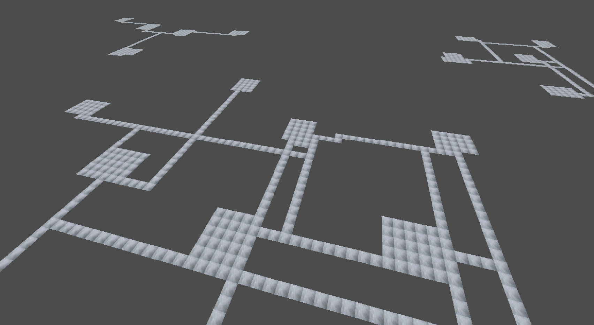

Fundamental Paper Education: Forth and Back

Info
It is a Half-Temple Run Half-FnaF 4 and Half-Baldi's Basics fangame set in the universe of Fundamental Paper Education.
Gameplay
Your goal is to collect up to 20 scientific papers, while avoiding around 8 planned humanity-deprived man-husks chasing after you.
You do it by running through hallways in FnaF 4 style, and making really quick decisions to respond appropriate to the given killer. Every paper you pick, make you faster as so as the others. You also need to do it in each different building with limited time on your hands.
Escape the school and become one of the world's richest man and a giant contributor to science, or die in a dirty and smelly haunted bumhouse.
Current Task:
Make generator draw walls
How I'm gonna do it?
Using modified flood-fill algorithm
Finished Topics